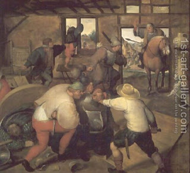

Bava Kamma 90 - $$$ Amounts Paid for Humiliation
One who boxes (alternatively, shouts into) the ear of his fellow must give him a Sela ($200), but Rabbi Yehudah says, a Maneh ($5,000). If he slapped him on his cheek, he gives him 200 zuz ($10,000), if he did it with the back of his hand, 400 zuz.
If he pulled his ear, yanked his hair, spat on him and his spittle reached him, removed his cloak from him, or bared the head of a woman in the marketplace, he gives him (or her) 400 zuz ($20,000).
This is the general rule: Everything depends on the victim's level of honor, and the amount above are the maximum.